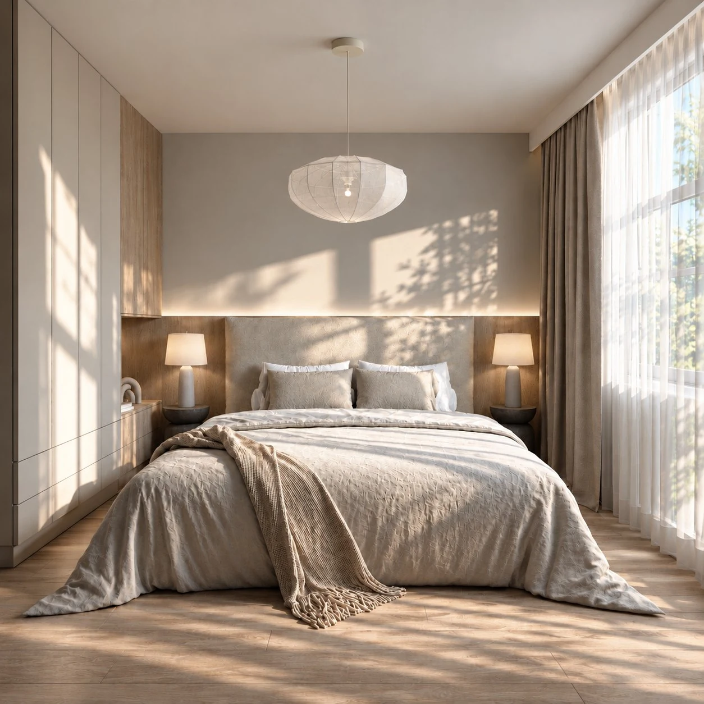
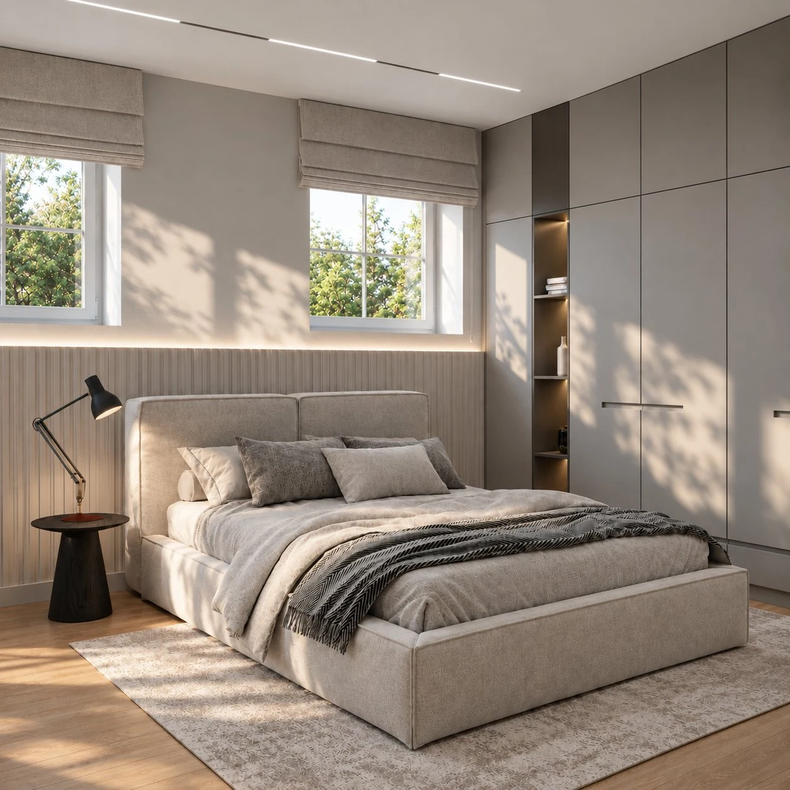
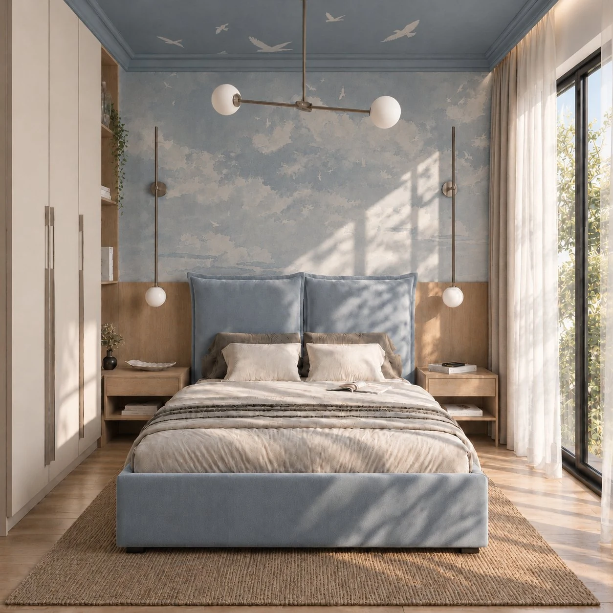
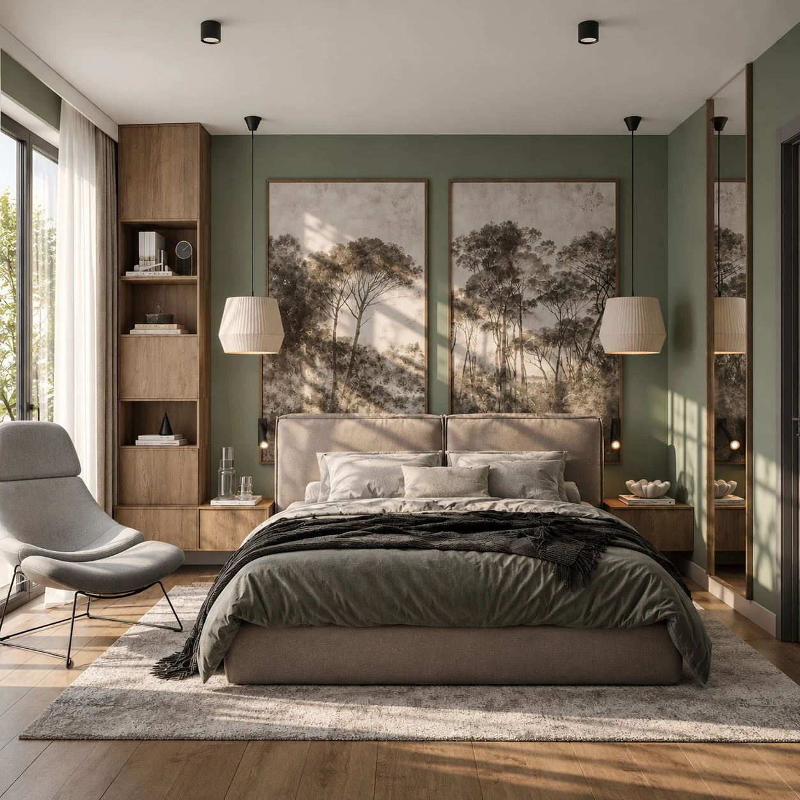

1. Brak pomiarów
Klasyk. Ktoś kupuje łóżko „na oko”, a potem okazuje się, że nie da się dojść do szafy albo drzwi balkonowe zderzają się z ramą łóżka. Zawsze najpierw miarka, potem Pinterest.
2. Przeciążenie meblami
Komoda, szafa, dwie szafki, toaletka, fotel, a na przejście zostaje 20 cm. Między łóżkiem a innymi meblami zwykle zostawiamy co najmniej 60 cm i naprawdę robi to różnicę na co dzień.

3. Wszystko z jednego katalogu
Komplet z jednej kolekcji wydaje się bezpieczny, ale efekt bywa nijaki i zbyt przewidywalny. Sypialnia to miejsce osobiste, więc zostaw w niej przestrzeń na coś Twojego: obraz, poduszkę, lampę. Nie muszą pasować idealnie. Wystarczy, że je lubisz.
4. Za surowo i za chłodno
Bez zasłon, poduszek i dywanu wnętrze robi się puste, odbija dźwięk i nie daje poczucia ciepła. Tkaniny to nie fanaberia, tylko klimat, akustyka i domowy komfort. Sypialnia bez nich często wygląda na niedokończoną.
5. Jedna lampa na wszystko
Oświetlenie sufitowe to dopiero początek. Brakuje światła do czytania, do porannego szykowania się, do nastroju wieczorem? Zaplanuj trzy warstwy światła: ogólne, zadaniowe i nastrojowe. Więcej o tym w osobnym artykule o oświetleniu sypialni.
6. Zasłony bez pomysłu
Zasłony powieszone byle jak, zbyt blisko ściany albo na za krótkim torze odbierają elegancję, zamiast ją dodawać. Jeśli planujesz maskownicę, zostaw na nią miejsce. My zwykle zostawiamy ok. 10 cm od ściany dla jednego toru, 15–20 cm dla dwóch torów i 25 cm, jeśli ma zasłonić też kaloryfer. Warto też pomyśleć o systemie wave, bo zasłony układają się w nim zawsze równo.
7. Za wysoko, za szeroko, za dużo
Dotyczy obrazów, kinkietów i półek. Dekoracje zawieszone za wysoko uciekają z pola widzenia, a kinkiet nie trafia nad poduszkę. Obraz wiesza się na wysokości oczu. Kinkiet zwykle ok. 130 cm od podłogi, ale trzeba uwzględnić wysokość zagłówka. Dobrze jest przymierzyć go na żywo, np. przyklejając tymczasowo taśmą malarską.
8. Przyzwyczajenie do chaosu
Rzeczy odłożone „na chwilę”: stos gazet, ładowarki, notatki, skarpetki. Wzrok się przyzwyczaja, ale ciało nadal czuje niepokój. Prosta zasada: codziennie usuń z przestrzeni trzy niepotrzebne rzeczy i zostaw trochę miejsca na oddech.
9. Kolor wybrany, bo był modny
Kolor może uspokoić albo irytować. Ściana w modnym odcieniu wygląda pięknie na Instagramie, a po tygodniu w Twojej sypialni masz ochotę ją przemalować. Sprawdź kolor w świetle dziennym i sztucznym i zaufaj sobie. Twoje odczucia są ważniejsze niż trend.

10. Brak osobistego akcentu
Jeśli sypialnia jest zbyt anonimowa, trudno się w niej czuć swobodnie. Zdjęcie z podróży, ulubiona książka, ramka z cytatem, który coś dla Ciebie znaczy. Takie rzeczy tworzą atmosferę bardziej niż najdroższa szafa.

Nie chodzi o to, żeby nie popełnić żadnego błędu
Chodzi o to, żeby wiedzieć, na co zwrócić uwagę. Im więcej przemyślisz na początku, tym mniej frustracji i kosztownych poprawek później.
Ilustracje w artykule to wizualizacje wnętrz zaprojektowanych przez Artefekt.
Chcesz urządzić sypialnię bez tych wpadek? Pierwsze spotkanie jest bezpłatne. Umów spotkanie.